Удружење грађана Иксан – Снага правде посвећено је јачању владавине права, заштити достојанства грађана, институционалној одговорности и развоју праведног друштва. Наш рад обједињује директну подршку грађанима, правне иницијативе, јавни дијалог и конкретне законске предлоге.
Иксан окупља грађане са циљем јачања правде и правне сигурности, кроз заједничко деловање, јавни притисак, правну подршку и изградњу система у коме грађанин није препуштен сам себи.
Назив симболизује правду, истину, одговорност и снагу заједнице. Он представља идеју да се достојанство човека, владавина права и институционална одговорност морају вратити у само средиште друштва.
Реформа система, заштита права грађана и стварање друштва у коме закон важи једнако за све. Радимо на томе да институције буду доступне, одговорне, контролисане и у служби јавног интереса.
Настали смо као одговор на неправде, злоупотребе и системску несигурност са којом се грађани свакодневно суочавају. Наш циљ је да грађанима вратимо глас, правну сигурност и осећај да постоји организована, озбиљна и истрајна подршка.
Наше деловање није симболично, већ мерљиво. Рад са грађанима, иницијативе, директни разговори, јавни наступи и законски предлози чине окосницу нашег деловања.
28.10.2025. Удружење грађана „Иксан – Снага правде“ регистровано је у АПР-у.
01.11–14.12.2025. Посетили смо 80 старијих лица у градовима и селима, разговарали са њима о њиховим потребама и проблемима.
15.12.2025. Подржали смо иницијативу родитеља за увођење закона „Родитељ–неговатељ“.
Децембар 2025 – јануар 2026. Пријавили смо учешће у процесу израде нацрта закона „Родитељ–неговатељ“.
05.01.2026. Отворена је канцеларија на Вождовцу за грађане, у којој свакодневно пружамо правну и саветодавну подршку.
15.01.2026. Поднета је иницијатива Уставном суду за оцену уставности одредби Закона о извршењу и обезбеђењу.
19.01.2026. Поднете су иницијативе председнику Републике, Влади и Народној скупштини ради измене спорних одредби Закона о извршењу и обезбеђењу.
01.02–01.03.2026. Обишли смо 15 градова и места у Србији, разговарали са грађанима.
06.03.2026. Узели смо учешће на „инфо данима“ у организацији Министарства за људска и мањинска права и друштвени дијалог.
16.03.2026. Узели смо учешће у јавној расправи поводом Нацрта закона о ауторском и сродним правима.
17.03.2026. Припремили смо анализу и оцену уставности спорних одредби постојећег Закона о извршењу и обезбеђењу.
18.03.2026. Израдили смо комплетан нацрт закона о инсолвентности физичких лица.
19.03.2026. Израдили смо нацрт закона о заштити егзистенцијалних примања грађана.
20.03.2026. Припремили смо измене и допуне Закона о заштити конкуренције.
Март 2026. Путем представки грађана обратили смо се на више од 20 адреса надлежних институција, са иницијативама и ургенцијама.
Јануар–Април 2026. Одржали смо преко 170 сати уживо преноса на друштвеној мрежи TikTok, у директној комуникацији са грађанима широм Србије.
Од 05.01.2026. Грађани се свакодневно укључују са различитим проблемима, а ми им пружамо саветодавну и правну подршку, укључујући и помоћ у подношењу представки.
Свакодневно. Наше активности прати на хиљаде грађана Србије.
Правда — закон мора важити једнако за све.
Одговорност — институције морају служити грађанима.
Транспарентност — рад мора бити јаван, проверљив и видљив.
Подршка — грађанин не сме остати сам пред системом.
Седиште: Београд
Адреса: Војводе Степе 127
Email: iksan.snaga.pravde@gmail.com
Телефон: 066 585 7 707
МБ: 28406312
ПИБ: 115357260
 Пишите нам
Пишите нам